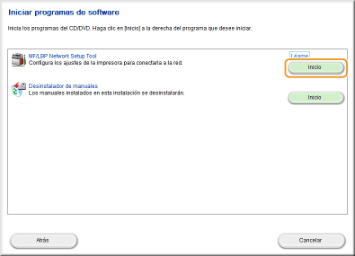
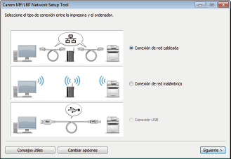
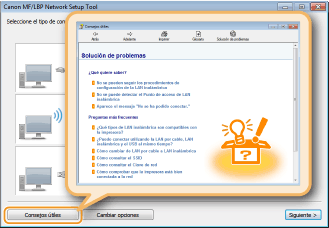

0KXF-01Y
Los routers inalámbricos (o los puntos de acceso) conectan el equipo a un ordenador a través de ondas de radio. Si el router inalámbrico incluye configuración Wi-Fi protegida (WPS), basta con pulsar un botón para configurar la red. Si los dispositivos de red no admiten la configuración automática, o si desea especificar las opciones de autenticación y cifrado con mayor detalle, deberá configurar la conexión manualmente. Para ello utilice la MF/LBP Network Setup Tool de su ordenador. Asegúrese de que su ordenador esté correctamente conectado a la red.

|
|
|
Inicio de sesión como administrador
Para realizar el siguiente procedimiento, inicie sesión en su ordenador con una cuenta de administrador.
Riesgo de filtración de información
Utilice una conexión de red inalámbrica si lo considera oportuno bajo su propia responsabilidad. Si el equipo está conectado a una red no protegida, su información personal podría llegar a terceras personas, ya que las ondas de radio que se utilizan en la comunicación inalámbrica pueden llegar a lugares cercanos e incluso traspasar paredes.
Normas de seguridad de las redes inalámbricas
Este equipo admite los siguientes estándares de seguridad de redes inalámbricas. Si desea obtener información sobre los estándares de seguridad inalámbrica que admite su router inalámbrico, consulte el manual de instrucciones o póngase en contacto con el fabricante.
WEP de 128 (104)/64 (40) bits
WPA-PSK (TKIP/AES-CCMP)
WPA2-PSK (TKIP/AES-CCMP)
|
 |
|
El equipo no incluye router inalámbrico. Usted deberá encargarse de tener un router listo según corresponda.
El router inalámbrico debe cumplir las normas IEEE 802.11b/g/n y ser capaz de comunicarse en una banda de 2,4 GHz. Para obtener más información, consulte el manual de instrucciones de su router inalámbrico o póngase en contacto con el fabricante.
La red cableada y la red inalámbrica no pueden utilizarse simultáneamente. Cuando utilice una conexión de red inalámbrica, no conecte ningún cable de red al equipo. De lo contrario, podrían producirse errores de funcionamiento.
Si utiliza el equipo en su oficina, póngase en contacto con el administrador de su red.
|
1
Introduzca el CD-ROM/DVD-ROM User Software en la unidad del ordenador.
2
Haga clic en [Iniciar programas de software].

Si no aparece la pantalla anterior Visualización de la pantalla [Programa de instalación del CD-ROM/DVD-ROM]
Si aparece [Reproducción automática], haga clic en [Ejecutar MInst.exe].
3
Haga clic en [Inicio] para [MF/LBP Network Setup Tool].

4
Para configurar las opciones de red inalámbrica, siga las instrucciones de la pantalla.

Si hay algo que no entiende
Haga clic en [Consejos útiles] en la parte inferior izquierda de la pantalla para mostrar consejos de solución de problemas.

|
|
|
Después de cambiar el método de conexión de red cableada a red inalámbrica
Deberá desinstalar el controlador de impresora actual y volver a instalarlo (Guía de instalación del controlador de impresora).
|